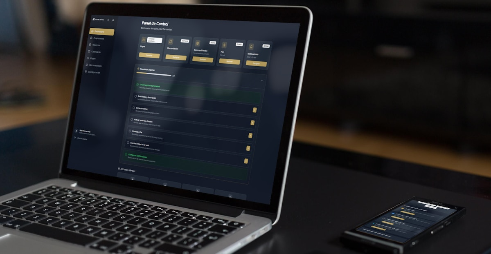
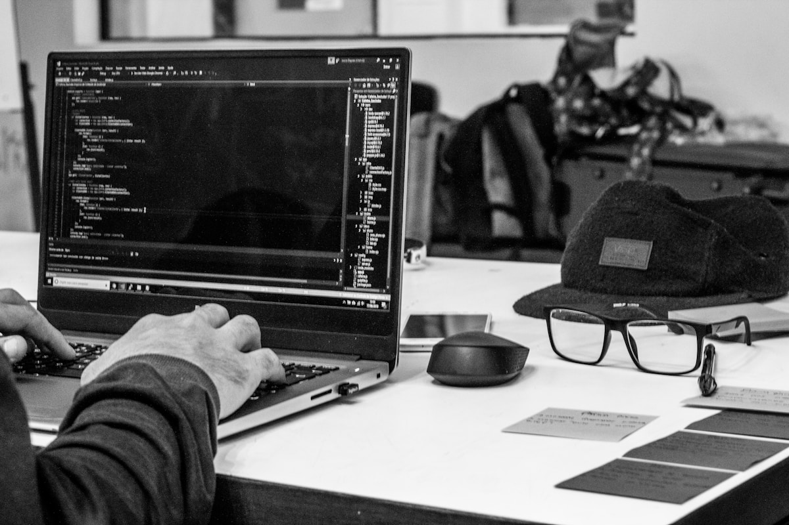
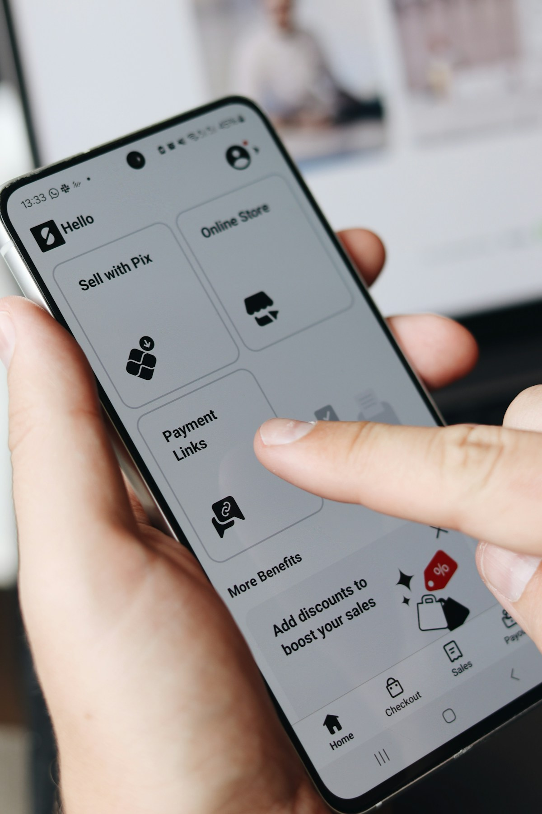
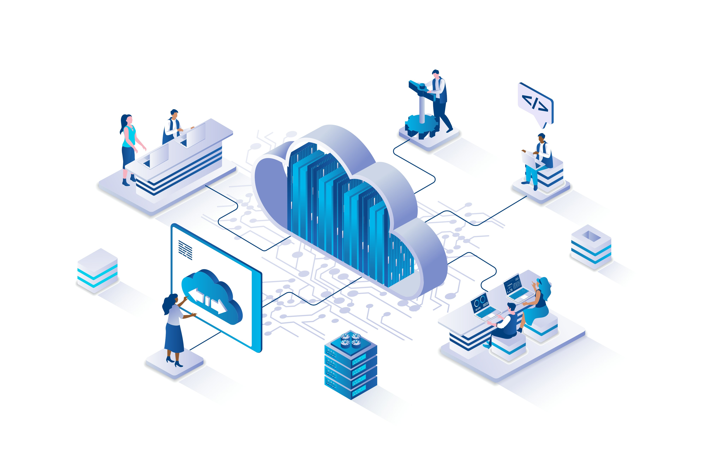
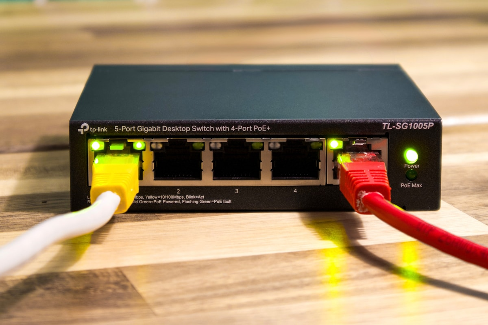
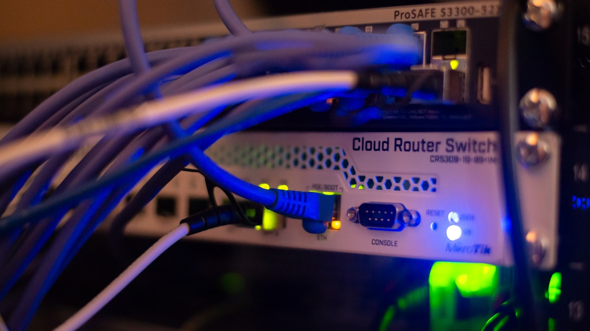

Frontend
Panel de monitoreo web
Interfaz modular para visualizar alertas, estados de servicios y reportes diarios en una misma vista adaptable.
Seleccion visual
Una coleccion visual de soluciones digitales que conecta interfaces, datos, infraestructura y experiencias moviles en una sola vitrina.
Area 01

Frontend
Interfaz modular para visualizar alertas, estados de servicios y reportes diarios en una misma vista adaptable.

Backend
Servicio de consulta y sincronizacion para sedes remotas con rutas separadas, control de stock y trazabilidad de operaciones.

Movil
Registro de incidencias en campo con formularios ligeros, evidencia visual y resumen inmediato para equipos operativos.
Area 02

BI
Consolida metricas de rendimiento, seguimiento operativo y comportamiento historico con filtros para toma de decisiones.

Prediccion
Estima variaciones semanales mediante series temporales y variables de contexto para anticipar saturaciones de servicio.
Area 03

Redes
Distribucion de servicios por zonas, niveles de acceso y reglas de trafico para reducir superficie de riesgo en la red interna.
Cloud
Define politicas de copias, versionado y recuperacion para ambientes de prueba y produccion con tiempos de respuesta claros.

Auditoria
Registro estructurado de cambios sensibles, accesos administrativos y alertas de integridad para revisiones periodicas.